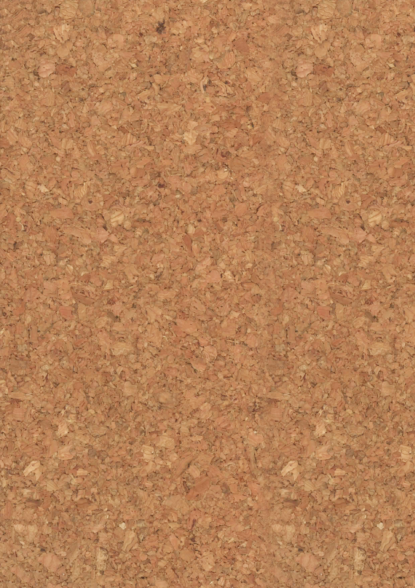

プロフィール
名前
： 小泉健太
年齢
： 18歳
誕生日
： 2005/09/21
出身学校
：
栄町小学校
、
栄町中学校
趣味・特技
趣味
： 音楽・映画鑑賞、ヴァイオリン演奏、
ゲーム、遠出
特技
： ピアノ演奏、絶対音感、手品、
ルービックキューブ
最近ハマってること
ウィンドウショッピング
：
特に服のお店によく行きます。
ブランドとか関係なく、いろんな服を見るのにハマってます。
短期目標
【優先順位】
1位
：高専祭を成功させる。
2位
：自作曲を一曲完成させる。
3位
：かつて持っていた手品の技術を取り戻す。